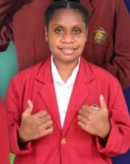
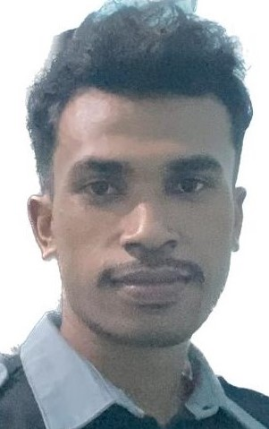

Selamat datang di halaman Pengembang Sistem. Saya adalah pengembang utama dari aplikasi UMKM Kerajinan Besek. Berikut adalah informasi profil singkat saya:
kami adalah mahasiswa dari universitas janabadra, yang menempuh matakuliah metode numerik
Devianti F Jumthe_21330019
Norbertus Talasau_21330060
Jika Anda memiliki pertanyaan, saran, atau masukan, jangan ragu untuk menghubungi saya melalui email atau melalui platform media sosial.
Jangan ragu untuk menghubungi saya untuk pertanyaan lebih lanjut atau kerjasama:
Email: devixyumthe@gmail.com